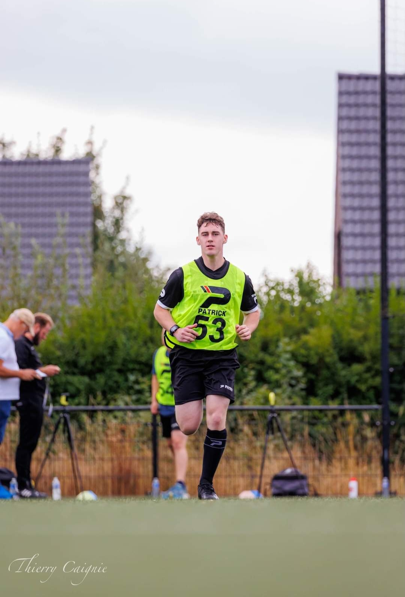

Wat kan ik bezichtigen?
Aantal kaarten
|
Punten controle
|
Seizoen 2024-2025
NEXT MATCH: Promotie naar 2de provinciaal
In de gym te bevinden
Komende matchen: Winterstop
11 januari begint 2de seizoenshelft
Promotie naar 2de provinciaal!
Wie ben ik?
Ik ben Ryan Vanneste
Ik ben 21 jaar
Fluit vast in 3de provinciaal

Seizoen 2024-2025 tot nu toe
Match 1 (Beker): Bissegem - Kanegem
Match 2 (3PB): Torhout B - Varsenare B (Controle)
Match 3 (3PA): Geluveld - Ploegsteert
Match 4 (3PC): Kuurne - Oostrozebeke
Match 5 (3PC): Bellegem - Ledegem
Match 6 (3PA): Voormezele - Elverdinge
Match 7 (3PB): Wingene - Varsenare B (Controle)
Match 8 (3POVL): Bellem - Muide Gent
Match 9 (3PA): Ploegsteert - Keiem
: 0-1
Match 10 (4P): Geluveld B - Passendale
: 1-3
Match 11 (3PC): Wevelgem B - Sint-Eloois-Winkel
: 0-0
Match 12 (2PB): Nieuwkerke - Racing Waregem B
: 3-2 (Assistent 1)
Match 13 (3PC): Emelgem Kachtem - Avelgem B
: 6-1
Match 14 (3PB): Dosko Kanegem - VK Zerkegem
: 3-1
Match 15 (Vriendschappelijk): Marke B - Heule B
: 3-1
Match 16 (3PA): FC DADIZELE SPORT - VK LANGEMARK-POELKAPELLE
: 1-0